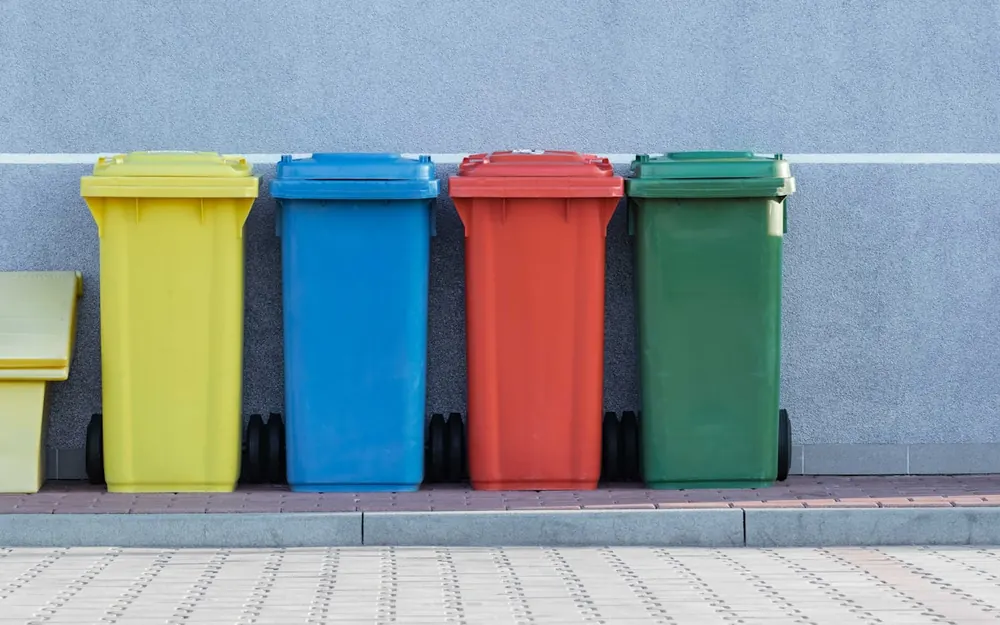

쓰레기 분리수거

한국에 살면 가장gajang · le plus 먼저 배우는 규칙gyuchik · règle 중 하나가 바로baro · justement, précisément 분리수거예요. Une des toutes premières règles que l'on apprend en vivant en Corée, c'est justement le tri sélectif. 쓰레기를 그냥geunyang · simplement, juste 버리면 안 되고 종류jongnyu · catégorie, type별로 정확하게jeonghwakhage · précisément 나눠야 해요. On ne peut pas jeter les déchets n'importe comment : il faut les trier précisément par catégorie.
플라스틱, 종이, 캔, 유리, 비닐binil · plastique souple, sachet을 각각gakgak · chacun 따로ttaro · séparément 모아요. On collecte séparément le plastique, le papier, les canettes, le verre et les sacs plastique. 음식물eumsingmul · matières alimentaires 쓰레기는 정해진jeonghaejin · désigné, fixé 통tong · bac, bidon에 따로 버려야 해요. Les déchets alimentaires se jettent à part, dans un bac dédié.
아파트apateu · immeuble에는 보통 분리수거를 하는 요일yoil · jour de la semaine이 정해져 있어요. Dans les immeubles, un jour de la semaine est généralement réservé au tri. 그날이 되면 주민jumin · habitant, résident들이 함께 쓰레기를 내놓아요naenoayo · sortir, déposer. Ce jour-là, les habitants sortent leurs déchets ensemble.
일반ilban · ordinaire, général 쓰레기는 반드시bandeusi · obligatoirement '종량제 봉투bongtu · sac, enveloppe'에 담아서 버려야 해요. Les déchets ordinaires doivent obligatoirement être mis dans un « sac payant au volume ». 이 봉투는 가까운gakkaun · proche 마트mateu · supermarché나 편의점에서 쉽게 살 수 있어요. Ce sac s'achète facilement au supermarché ou à la supérette du coin.
분리수거를 제대로jedaero · correctement 하지 않으면 벌금beolgeum · amende을 낼 수도 있어요. Si l'on ne trie pas correctement, on s'expose à une amende. 그래서 사람들은 규칙을 아주 꼼꼼하게kkomkkomhage · méticuleusement 지켜요jikyeoyo · respecter. C'est pourquoi les gens respectent les règles très méticuleusement.
한국에 사는 한 외국인oegugin · étranger은 "처음에는 복잡했지만bokjaphaetjiman · c'était compliqué mais 이제는 익숙해졌어요iksukhaejyeosseoyo · s'être habitué"라고 말했어요. Un étranger vivant en Corée témoigne : « Au début c'était compliqué, mais maintenant j'y suis habitué. »
분리수거는 조금 귀찮지만gwichanchiman · pénible mais 환경hwangyeong · environnement을 지키는 중요한 습관seupgwan · habitude이에요. Le tri est un peu pénible, mais c'est une habitude importante pour préserver l'environnement. 작은 노력noryeok · effort들이 모여 더 깨끗한kkaekkeutan · propre 도시를 만들어요. De petits efforts réunis donnent une ville plus propre.